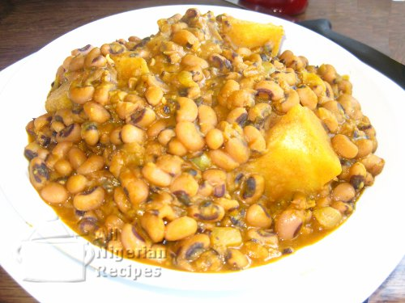

Beans Porridge

Description
Popular Nigerian Bean Porridge
Beans known as Ewa to the Yorubas are unpopular staple foods because it is associated with bloating, flatulence and indigestion. Most people have one reason or the other why they do not eat beans. Yet, it is advisable to to have beans in the family menu especially when you have young children in the family.
Ingredients
- 3 cigar cups (approx. 750g) brown/black eyed beans
- Red palm oil (enough to colour)
- 1 medium onion
- Pepper & Salt (to taste)
- 1 big stock cube
- 500g Yam/Plantain/Sweet Potatoes/Baby Corn (Optional)
Steps
Before Cooking
-
Soak the beans in cold water for 5 hours. Boil the beans for 5 minutes and discard the water. Wash the beans in cold water and set aside. This soaking and pre-cooking process will help reduce the gas inducing elements.
-
Chop the onions, grind the crayfish (if you are using it) and pepper.
-
If you will use yam/plantain/sweet potatoes, wash, peel and cut them into 1 inch cubes and set aside. If you will use baby corn, drain the preservation liquid, rinse and set aside.
Cooking Directions
-
Put the beans in a pot and pour water up to the level of the beans and start cooking.
Note: If you have a pressure cooker, beans is one of the staple foods you will want to use it for. It reduces the cooking time considerably.
-
Cook till tender, adding more water from time to time, if necessary. Always keep the water at the same level as the beans so that when the beans is done, you will not have too much water in the porridge.
-
When the beans porridge is soft, add the onions, crayfish (if using it), pepper and seasoning.
-
Add the red palm oil, salt to taste and cook for more 5 minutes on medium heat.
Note:To get the most out of beans, it is best to cook it with one of the following: sweet yam, ripe/unripe plantain, sweet potatoes or baby corn. If you will add any of these, this is when to do so. Then instead of cooking for 5 minutes, cook till the added yam / plantain / potatoes is done. The baby corn should be added when you turn off the heat in step 5.
-
Turn off the heat, add the baby corn (if you have chosen to use it), leave to stand for 5 minutes and turn the porridge with a wooden spoon.